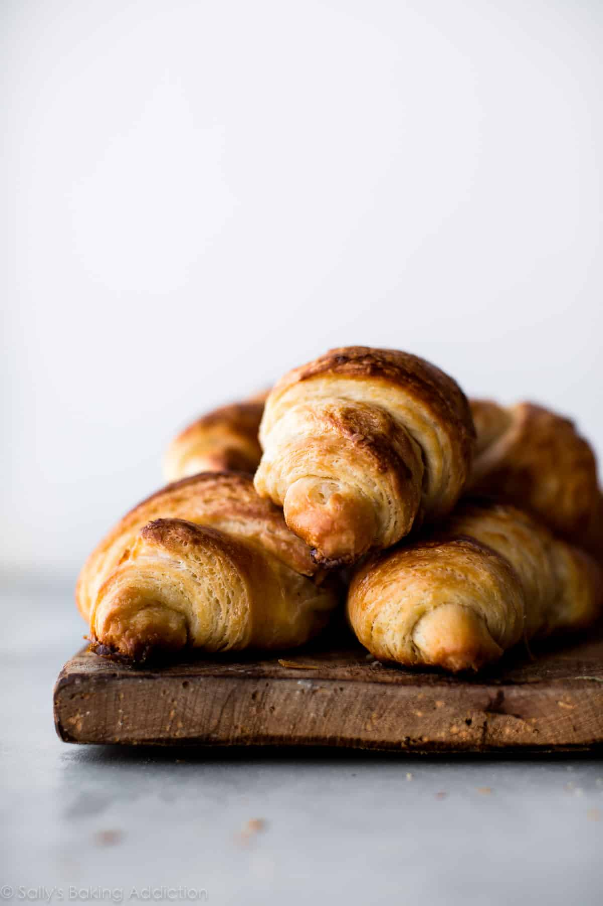

Croissant

Description
A croissant is a buttery, flaky pastry that has gained worldwide popularity.
This iconic pastry is made from laminated dough, requiring flour, yeast, sugar, salt, butter, and water. The dough is folded and rolled multiple times to create thin layers of dough and butter, which is essential for its flaky texture.
Step by step:
- Mix flour, sugar, salt, yeast, and milk into dough.
- Chill and flatten dough; place a sheet of cold butter inside.
- Fold, roll, and chill repeatedly to create layers.
- Cut into triangles; roll into crescent shapes.
- Let rise until puffy.
- Brush with egg wash; bake until golden.
Back
Next